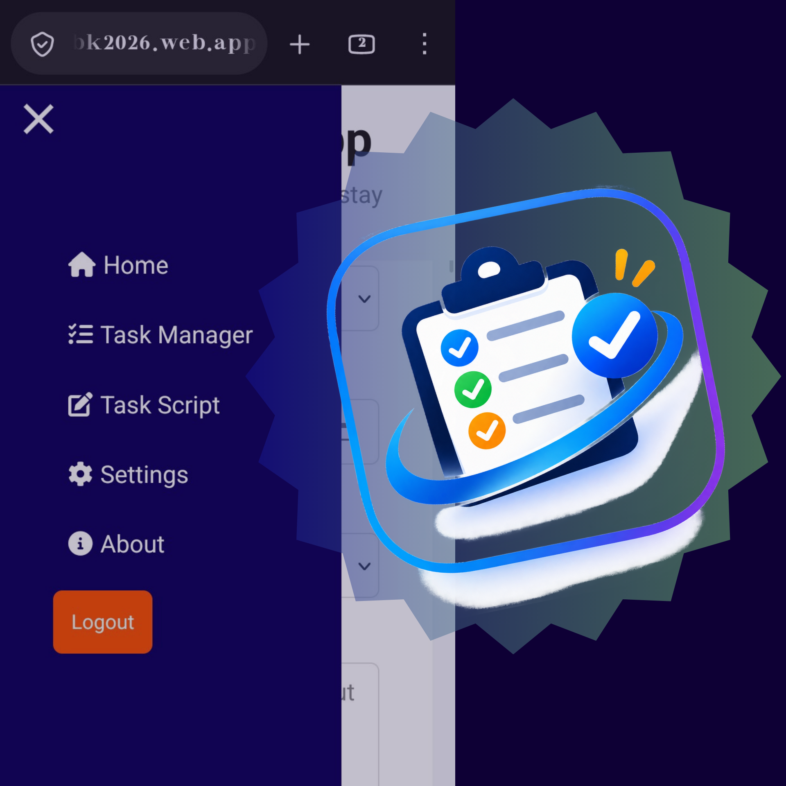
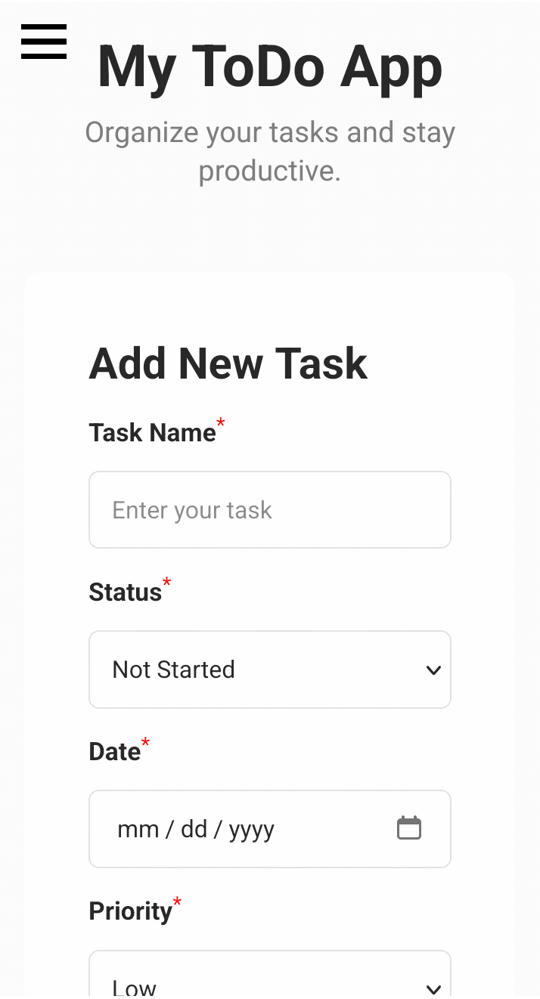

ToDo App
A task management web application designed to help users organise daily activities, manage priorities, plan tasks, and document their goals through a personalised task management system.

Project overview
ToDo App is a web-based task management application I developed to organise and manage personal activities systematically. It provides features for creating and tracking tasks, setting priorities and dates, and maintaining detailed task scripts. Firebase provides the backend infrastructure for user authentication and cloud-based data storage.
Purpose
I developed this project to explore how front-end development can be combined with backend services to create a functional, data-driven application. My goal was to build a practical productivity tool while gaining hands-on experience with JavaScript, Firebase Authentication, Cloud Firestore, and application architecture.
Technologies used
Key features
- User registration, login, and authentication.
- Task creation, updating, tracking, and deletion.
- Task priorities and date-based organisation.
- Task filtering and searching.
- Task Script Pad for documenting plans, goals, and detailed task descriptions.
- Cloud-based storage of user-specific tasks and scripts.
- Settings and account management.
Screenshots / gallery

What I learned
- Developing a multi-page web application using HTML, CSS, and JavaScript.
- Implementing user authentication and managing user-specific data with Firebase.
- Understanding CRUD operations and cloud database integration using Cloud Firestore.
- Organising JavaScript code and handling asynchronous operations.
- Using Git and GitHub for version control and collaborative development workflows.
- Deploying a web application through Firebase Hosting and GitHub Actions.